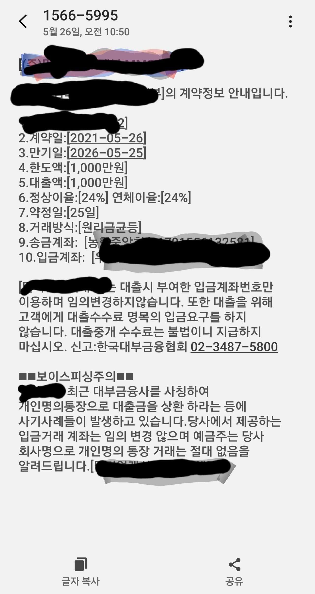

[개인회생자대출] 김인숙과장님 최규열이사님 감사드립니다
직장인 4년차
사대보험가입되어있고
통장수령 이백정도
개인회생 폐지결정이 나서 미납입금완납하고 항소장접수하고
면책신청접수했습니다밀린미납금이 270정도라서 정리한다고

생활비도 없고해서급한마음에 대출문의를하게되었는데 회생중사용있던 저축은행이최근단기연체도 있고해서 많이 불안했습니다 폐지이력도있고해서 폐지취소확정나고 김인숙과장님께서 많이 도와주셨는데 여러군대 다부결이 나서 거의포기하고있었는데 젤마지막 한군대에서 대환조건으로승인받았어요 진짜 진짜 감사합니다
신용관리잘해서 면책확정받으면
다음에는 저금리로 꼭갈아타러올께요
정말 힘들때도움받아서 감사합니다
진짜잊지않겠습니다
감사합니다 연체없이 잘하겠습니다